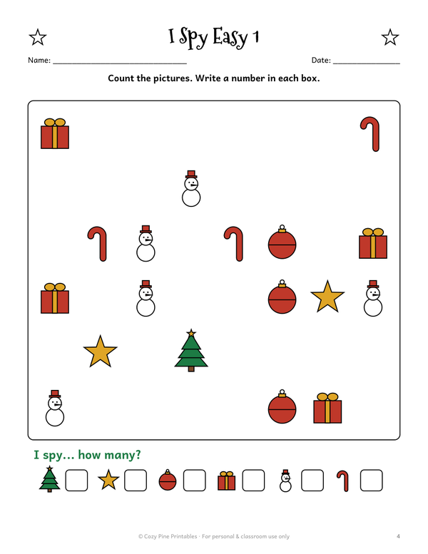
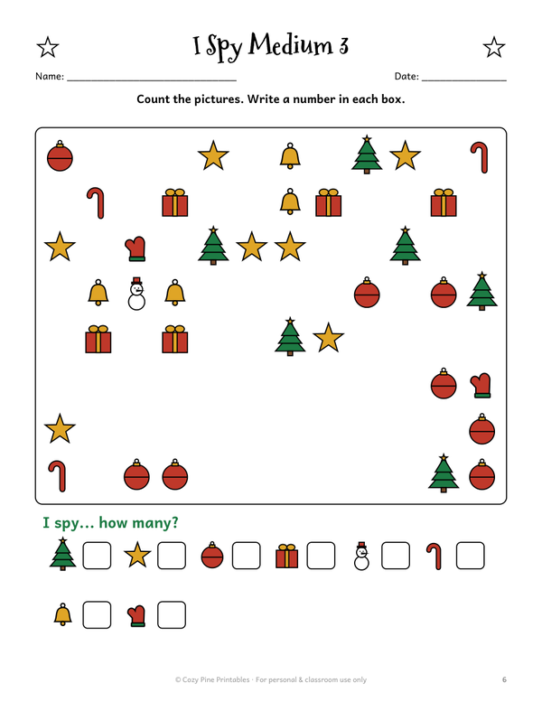
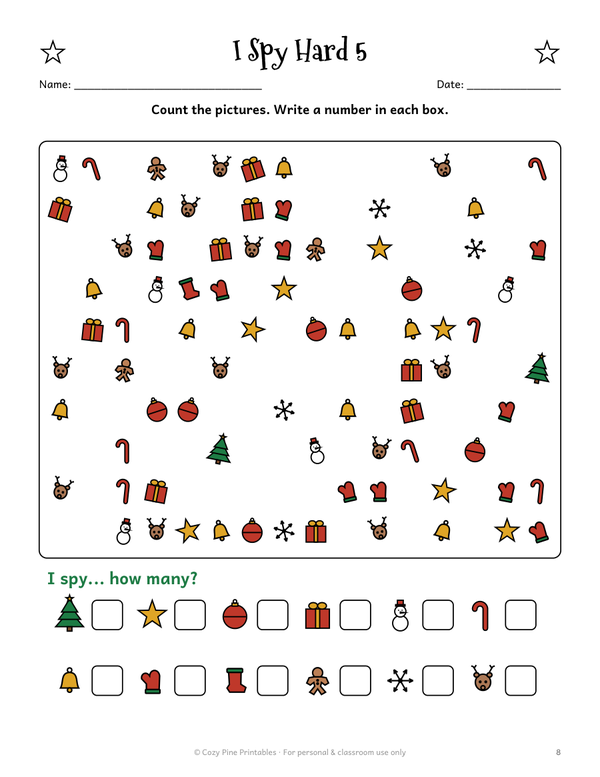
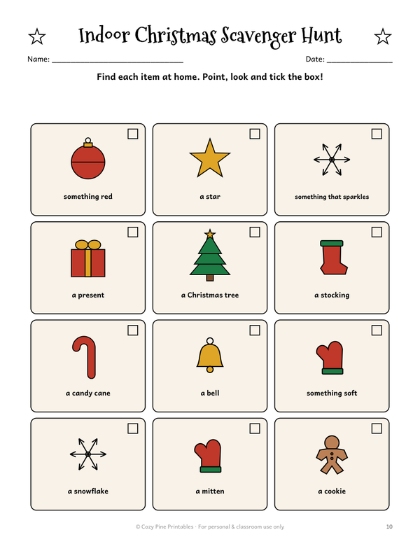
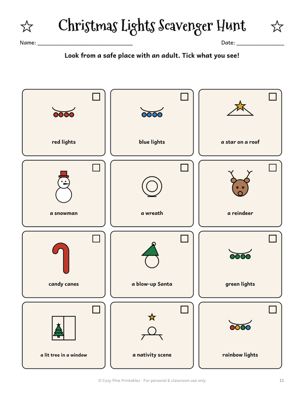
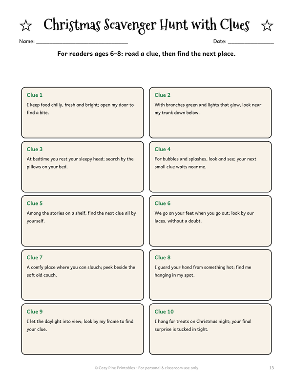
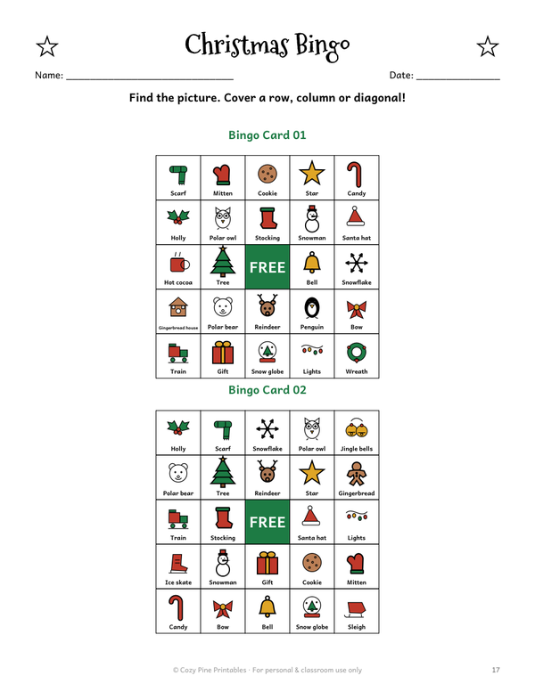
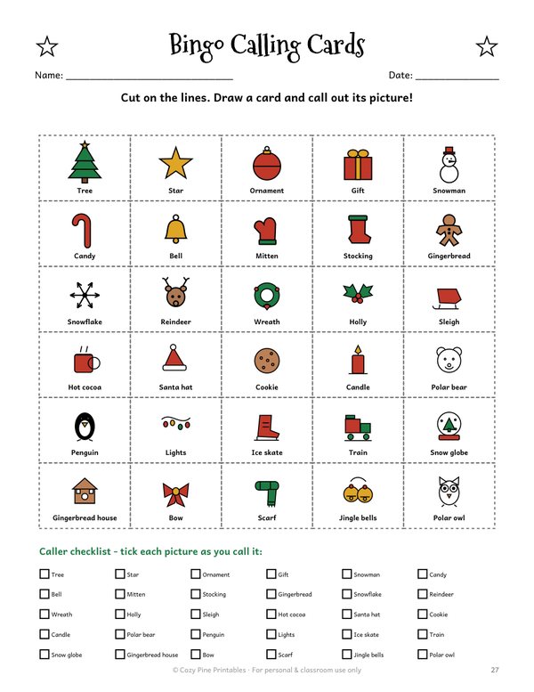
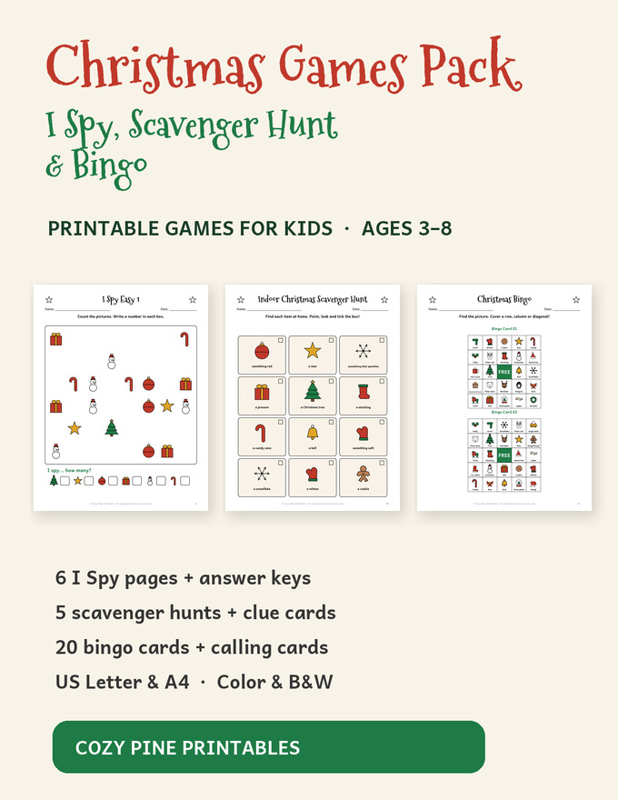

Christmas I Spy, Scavenger Hunt & Bingo
Printable games for kids 3–8 · home, car rides & class parties
Christmas I Spy pages are counting practice that feels like a game: find the stars, bells and mittens, count them and write the number. Our pages go from easy (6 kinds of things, up to 5 each) to hard (12 kinds, up to 12 each), with answer keys.
The scavenger hunts get kids moving: a picture hunt for non-readers, a Christmas lights hunt for an evening drive, a color hunt and a hunt with rhyming clues for kids who read.
And for the whole family: Christmas picture bingo with 20 different cards and calling cards — little ones can play too, every square has a picture and a label.
Try one I Spy page and the indoor scavenger hunt free:
⬇ Download the free I Spy + scavenger hunt (US Letter PDF) ⬇ Download the free I Spy + scavenger hunt (A4 PDF)Free PDF includes:
- 1 easy I Spy page + answer key
- Indoor Christmas scavenger hunt with pictures
What's inside the pack








Christmas Games Pack: I Spy, Scavenger Hunt & Bingo

- 6 I Spy pages in 3 levels (easy → hard) with answer keys
- 5 scavenger hunts: indoor picture hunt, Christmas lights hunt, color hunt, hunt with rhyming clues, make-your-own
- Color and ink-saving black & white versions
- Christmas bingo: 20 player cards + calling cards
- US Letter & A4 · instant PDF download
$5.00
Get all the Christmas games →Christmas Bundle: Math + Coloring

- Both packs: 49-page Christmas Math Worksheets + 31 Christmas coloring pages
- 80+ printable pages · 2 PDF files · instant download
- $10.99 if bought separately — save 40%
$6.43
Get the bundle →Ways to play
- Laminate the I Spy pages or slip them into sheet protectors and use a dry-erase marker.
- Take the lights hunt on an evening drive to see the Christmas lights.
- Hide small treats at the end of the rhyming-clue hunt.
- In class: one I Spy page per table, the first team to finish checks with the answer key.